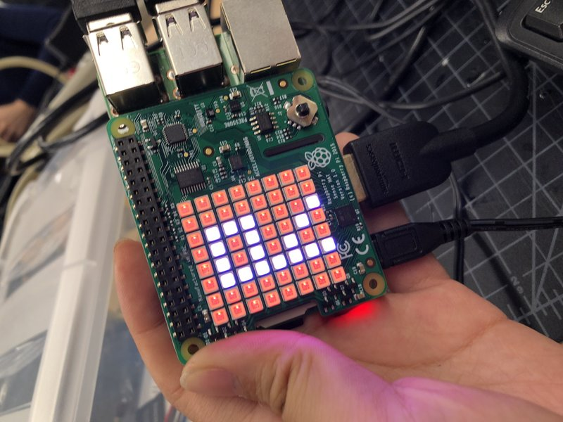

Raspberry Pi is so fun!
Raspberry Pi, similar to Arduino is an electronic circuit with bread broad but it can do more things because of the electronic computing. It is a significant invention because it is a cheap education tool—a credit-card size computer that can connect to display screens.
Python and Scratch are the softwares that we use for programming circuits, we write code in these softwares and they translate it in their own language and transmit the information back. When coding in these softwares, we cannot have any errors like wrong letter or forget to capitalized, because it wouldn’t work.
My favorite part was connecting Raspberry Pi to the camera. I think this can be used in many places such as a cheap monitor.

The picture was taken when I was coding the Sense Hat into colors and patterns I wanted. I made it an R, which symbolizes “Regina” I can also it blink on and off .